<!DOCTYPE html>
<html lang="en">

<head>

<meta charset="utf-8">
<meta name="author" content="parth_parikh">
<meta name="description" content="This blog-post describes the working of approximate distance oracles, an advanced data structure, which are used to solve the all pair shortest path problem.">
<meta name="viewport" content="width=device-width, initial-scale=1">
<title>Approximate Distance Oracles</title>
<link rel="stylesheet" type="text/css" href="./style/common_styles.css" id="light">
<link href="./style/prism.css" rel="stylesheet" />
<script src="./js/prism.js"></script>
<script id="MathJax-script" async src="https://cdn.jsdelivr.net/npm/mathjax@3/es5/tex-mml-chtml.js"></script>
<link rel="stylesheet" type="text/css" href="../style.css">
<link rel="shortcut icon" type="image/png" href="../favicon.png"/>
<noscript><style> .off { display: none } </style></noscript>

</head>

<body>
<div class="blog-text">
<h1>Approximate Distance Oracles</h1>
<h2>Author: <a href="../index.html">Parth Parikh</a></h2>
<h2>First Published: 14/05/21</h2>
<blockquote>
    <p style="font-style: italic;">“One day Alice came to a fork in the road and saw a Cheshire cat in a tree. 
    <br>‘Which road do I take?’ she asked. 
    <br>‘Where do you want to go?’ was his response. 
    <br>‘I don’t know,’ Alice answered. 
    <br>‘Then,’ said the cat, ‘it doesn’t matter.”</p>
    - Lewis Carroll, Alice in Wonderland
</blockquote>
<h2>Table of Contents</h2>
<ul>
    <li><a href="#single-source-shortest-path-problem">Single-Source Shortest-Path Problem</a></li>
    <li><a href="#all-pairs-shortest-path-problem">All-Pairs Shortest-Path Problem</a></li>
    <li><a href="#all-pairs-approximate-shortest-path">All-Pairs Approximate Shortest-Path Problem</a></li>
    <li><a href="#approximate-distance-oracles">Approximate Distance Oracles</a>
        <ul>
            <li><a href="#preprocessing-algorithm-for-3-approximate-distance-oracles">Preprocessing algorithm for 3-approximate distance oracles</a></li>
            <li><a href="#distance-query-algorithm-for-3-approximate-distance-oracles">Distance query algorithm for 3-approximate distance oracles</a>
                <ul>
                    <li><a href="#analogy">An Analogy</a></li>
                    <li><a href="#algorithm">Algorithm</a></li>
                </ul>
            </li>
        </ul>
    </li>
    <li><a href="#2k-1-approximate-distance-oracles">(2k-1)-approximate distance oracles</a>
        <ul>
            <li><a href="#dissecting-the-preprocessing-algorithm">Dissecting the Preprocessing Algorithm</a></li>
            <li><a href="#dissecting-the-distance-query-algorithm">Dissecting the Distance Query Algorithm</a></li>
            <li><a href="#miscellaneous-questions">Miscellaneous Questions</a></li>
        </ul>
    </li>
    <li><a href="#conclusion">Conclusion</a></li>
</ul>

<p><b>Note:</b> To my knowledge, this is the first non-academic description of Approximate Distance Oracles. Furthermore, this is my first time writing about Graph Theory. Therefore, if you find any mistakes, <a href="../index.html#contact">please do let me know</a>.</p>

<h2 id="single-source-shortest-path-problem">Single-Source Shortest-Path Problem</h2>
<p>Let us assume that we have an undirected graph with strictly positive edge weights. Let us also assume that this graph represents the fictional city - <i>The Ten Blocks</i>. Here is an aerial view of this city - </p>
<figure>
    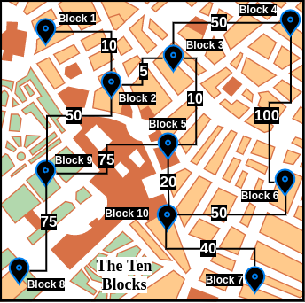
    <figcaption>Figure 1: Map of a fictional city called The Ten Blocks.</figcaption>
</figure>
<p>As <i>The Ten Blocks'</i> map can be cumbersome to visualize, for the rest of this blog post, we will be working with a simplified version - </p>
<figure>
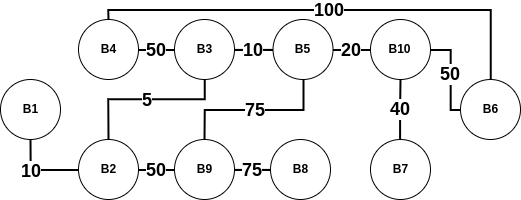
<figcaption>Figure 2: A simplified version of <i>The Ten Blocks.</i></figcaption>
</figure>

<p>When we visualize this city as a graph, we notice that it has 10 vertices and 11 edges. Each vertex has a label of the form <i>Block N</i>, with N being any unique integer (for the rest of this blog post, <b>we will abbreviate Block N as BN</b>). The <b>edge weight</b> is the distance between two blocks. For example, the weight of the edge between B1 and B2 is 10. Furthermore, the <b>length of a path</b> between any two blocks is the sum of all the edge weights connecting that path. For example, the path (B1, B2, B3) has a length of 10+5=15. However, one should note that this is not the only path from B1 to B3. Another path is (B1, B2, B9, B5, B3) which has a path length of 10+50+75+10=145. Certainly a costly one!</p>

<p>A widely studied question about graphs is the <a href="https://en.wikipedia.org/wiki/Shortest_path_problem">shortest path problem</a>, which is:
<blockquote cite="https://en.wikipedia.org/wiki/Shortest_path_problem">the problem of finding a path between two vertices (or nodes) in a graph such that the sum of the weights of its constituent edges is minimized.</blockquote>
It can be observed visually that the shortest path between B1 and B3 is indeed (B1, B2, B3) with a path length of 10. But how do we <b>algorithmically</b> find the shortest paths between two vertices? One way is by using <b>Dijkstra's algorithm</b>. While a thorough analysis of Dijkstra's algorithm is beyond the scope of this blog post, <a href="https://en.wikipedia.org/wiki/Dijkstra%27s_algorithm#Algorithm">the algorithm mentioned in the Wikipedia page on Dijkstra's algorithm is an excellent start</a> - 
    <blockquote cite="https://en.wikipedia.org/wiki/Dijkstra%27s_algorithm#Algorithm">
        <p>Let the node at which we are starting be called the <b>initial node</b>. Let the <b>distance of node <i>Y</i></b> be the distance from the <b>initial node</b> to <i>Y</i>. Dijkstra's algorithm will assign some initial distance values and will try to improve them step by step.
        </p>
        <ol><li>Mark all nodes unvisited. Create a set of all the unvisited nodes called the <i>unvisited set</i>.</li>
        <li>Assign to every node a tentative distance value: set it to zero for our initial node and to infinity for all other nodes. Set the initial node as current.</li>
        <li>For the current node, consider all of its unvisited neighbours and calculate their <i>tentative</i> distances through the current node. Compare the newly calculated <i>tentative</i> distance to the current assigned value and assign the smaller one. For example, if the current node <i>A</i> is marked with a  distance of 6, and the edge connecting it with a neighbour <i>B</i> has length 2, then the distance to <i>B</i> through <i>A</i> will be 6 + 2 = 8. If B was previously marked with a distance greater than 8 then change it to 8. Otherwise, the current value will be kept.</li>
        <li>When we are done considering all of the unvisited neighbours of the current node, mark the current node as visited and remove it from the <i>unvisited set</i>. A visited node will never be checked again.</li>
        <li>If the destination node has been marked visited (when planning a route between two specific nodes) or if the smallest tentative distance among the nodes in the <i>unvisited set</i> is infinity (when planning a complete traversal; occurs when there is no connection between the initial node and remaining unvisited nodes), then stop. The algorithm has finished.</li>
        <li>Otherwise, select the unvisited node that is marked with the smallest tentative distance, set it as the new "current node", and go back to step 3.</li></ol>
        <p>When planning a route, it is actually not necessary to wait until the destination node is "visited" as above: the algorithm can stop once the destination node has the smallest tentative distance among all "unvisited" nodes (and thus could be selected as the next "current").
        </p>
    </blockquote>
</p>

<p>To visualize the above Dijkstra's algorithm in practice, here is an example that uses <i>The Ten Blocks</i> graph - 
    <figure>
        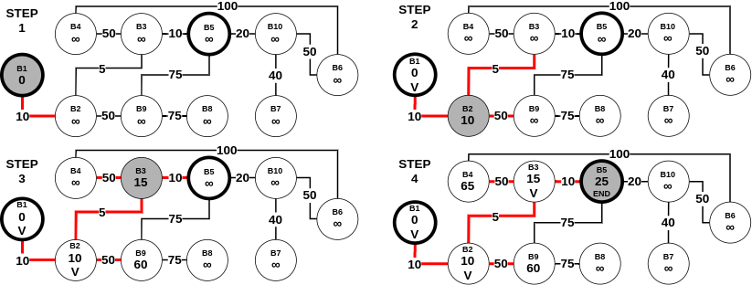
        <figcaption>Figure 3: Example of Dijkstra's algorithm on our <i>The Ten Blocks</i> graph. Assuming that the starting vertex (initial node) is B1 and the ending vertex is B5. Initially, the starting vertex has a tentative distance of 0, whereas all the other vertices have a tentative distance of Infinity (∞). After a vertex has been visited, we label it with V. As observed in step 4, the shortest path between B1 and B5 is (B1, B2, B3, B5) with a distance of 25.</i></figcaption>
    </figure>    
In a <a href="./pseudocode-to-code.html">previous blog post</a>, I described how a variant of Dijkstra's algorithm called Best-First search (which uses a <a href="https://en.wikipedia.org/wiki/Heuristic_(computer_science)">heuristic function</a>) can be used for pseudocode-to-code generation. So, it suffices to say that Dijkstra's algorithm is not the only algorithm to solve the shortest path problem. A curious reader can read about similar algorithms such as the <a href="https://en.wikipedia.org/wiki/Bellman%E2%80%93Ford_algorithm">Bellman-Ford algorithm</a>. 
</p>

<p>The working we described above is part of the <b>single-<u>pair</u> shortest path problem</b>. This is because, we were primarily interested in the shortest path between one <u>pair</u> (which in the above example was (B1, B5)). However, Dijkstra's algorithm can be used for a more general class of problems called <b>single-<u>source</u> shortest path problems</b>. This variant can be defined as:
    <blockquote cite="https://en.wikipedia.org/wiki/Shortest_path_problem">A problem in which we have to find shortest paths from a source vertex v to all other vertices in the graph.</blockquote>
Let us assume that in <i>Figure 3</i>, there was no endpoint. Instead, we want to find the shortest path from B1 to all the other 9 points. In this scenario, as per Dijkstra's algorithm mentioned above, we stop when we have visited (exactly once) every node in the graph (starting with B1). Here is a step-by-step process of the same - 
<figure>
    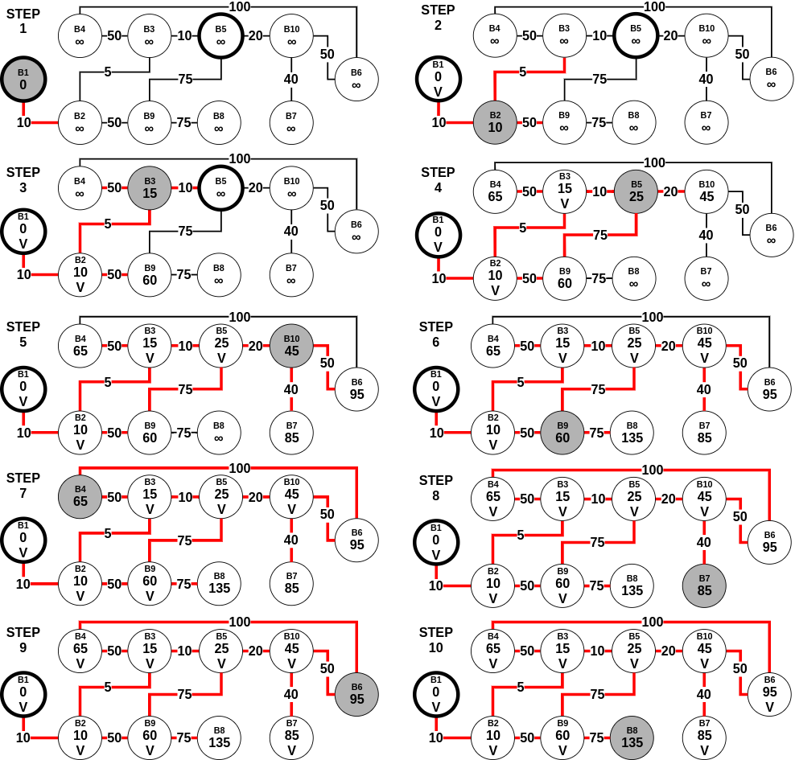
    <figcaption>Figure 4: Example of Dijkstra's algorithm tuned to single-<u>source</u> shortest path problem on our The Ten Blocks graph.</figcaption>
</figure>
</p>

<p>Assuming <b>n is the number of vertices in the graph</b>, Dijkstra's algorithm requires no more than (n-1) steps, with each step requiring no more than (n-1) comparisons to check if the vertex is not visited before, and no more than (n-1) comparisons to update the labels at each step. All in all, it uses O(n<sup>2</sup>) operations for additions and comparisons for the single-source shortest path problem.</p>

<h2 id="all-pairs-shortest-path-problem">All-Pairs Shortest-Path Problem</h2>
<p>A natural succession to the single-source shortest path problem is the <b>all-pairs shortest path problem (APSP)</b>, which is defined as:
    <blockquote src="https://en.wikipedia.org/wiki/Shortest_path_problem">
        A problem in which we have to find the shortest paths between <b>every pair</b> of vertices v, v' in the graph.
    </blockquote>
Keeping our previous assumptions valid (the graph is undirected and has positive edge weights), the easiest solution to the above problem would be to run Dijkstra's algorithm on every vertex in the graph. In doing so, we will obtain the following matrix:
<figure>
    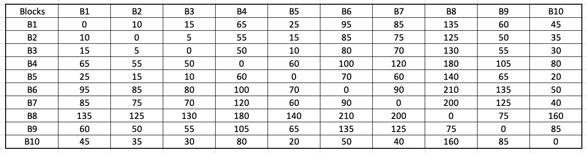
    <figcaption>Figure 5: Matrix calculating the shortest path between every pair of blocks in The Ten Blocks city.</figcaption>
</figure>
As can be observed in Figure 5, the data structure produced is of size O(n<sup>2</sup>), an n x n matrix holding the distances. Once this matrix is generated, any future query for the shortest path between two vertices requires O(1) - constant time. However, as we observed, producing such a matrix can take O(n<sup>3</sup>) time (breakdown - O(n<sup>2</sup>) for the single-source shortest path, which is repeated for n vertices)). Another method to solve the all-pairs shortest-path problem is the <a href="https://en.wikipedia.org/wiki/Floyd%E2%80%93Warshall_algorithm">Floyd-Warshall algorithm</a>. The algorithm is as follows:
    <figure>
        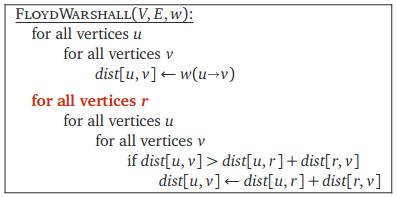
        <figcaption><b>Terminology:</b> Here V, E contains the values of all the vertices and edges respectively. Moreover, w contains the edge weights between a pair of vertices. The notation w(u->v) represents the edge weight between vertices u and v. Furthermore, the notation dist[u,v] represents the distance between the vertices u and v. <br> This algorithm is from the textbook <a href="https://jeffe.cs.illinois.edu/teaching/algorithms/">Algorithms by Jeff Erickson</a> (chapter 9). The book's contents are licensed under <a href="https://creativecommons.org/licenses/by/4.0/">Creative Commons Attribution 4.0 International license</a>.</figcaption>
    </figure>
</p>

<p>Wikipedia contains a <a href="https://en.wikipedia.org/wiki/Floyd%E2%80%93Warshall_algorithm#Example">step-by-step example</a> of the above algorithm. As can be observed, this algorithm has a time complexity of O(n<sup>3</sup>). At this point, a curious reader might be wondering - are the runtime between Floyd-Warshall and Dijkstra-based APSP the same? Here is what <a href="https://www3.cs.stonybrook.edu/~skiena/">Prof. Steven Skiena</a> had to say in The Algorithm Design Manual (second edition, chapter 6.3 - Shortest Paths):
    <blockquote cite="https://www3.cs.stonybrook.edu/~skiena/">
    The Floyd-Warshall all-pairs shortest path runs in O(n<sup>3</sup>) time, which is asymptotically no better than n calls to Dijkstra’s algorithm. However, the loops are so tight and the program so short that it runs better in practice. It is notable as one of the rare graph algorithms that work better on adjacency matrices than adjacency lists.
    </blockquote>
A relevant discussion regarding the above statement is found on StackOverflow - <a href="https://stackoverflow.com/questions/10779054/time-complexity-of-floyd-warshall-algorithm">Time complexity of Floyd Warshall algorithm</a>. A summary of the top answer from <a href="https://stackoverflow.com/users/3649209/james-lawson">James Lawson</a> is as follows:
    <blockquote cite="https://stackoverflow.com/a/49835710/7543474">
        The key words here are "in practice". Remember, asymptotic analysis isn't perfect. It's a mathematical abstraction/approximation for performance. When we actually come to run the code, there are many practical factors that it did not take into account. The processor has a complex low-level architecture for fetching and running instructions. .....
        <br><br>
        It turns out that processors love optimizing nested for loops and multi-dimensional arrays! This is what Skiena is alluding to here. The for loops the array makes the best use of <a href="https://en.wikipedia.org/wiki/Locality_of_reference">temporal and spatial locality</a> and works well with low-level processor optimizations. Dijkstra's algorithm on the other hand doesn't do this as well and so the processor optimizations don't work as well. As a result, Dijkstra could indeed be slower in practice.
    </blockquote>
</p>

<p><b>Interesting Story:</b> The history behind the Floyd-Warshall algorithm is as fascinating as the algorithm itself. From Algorithms by Jeff Erickson (chapter 9): 
    <blockquote>A different formulation of shortest paths that removes this logarithmic factor was proposed twice in 1962, first by Robert Floyd and later independently by Peter Ingerman, both slightly generalizing an algorithm of Stephen Warshall published earlier in the same year. In fact, Warshall’s algorithm was previously discovered by Bernard Roy in 1959, and the underlying recursion pattern was used by Stephen Kleene in 1951. Warshall’s (and Roy’s and Kleene’s) insight was to use a different third parameter in the dynamic programming recurrence.</blockquote>
Kleene's algorithm (published in 1956) was used for <a href="https://en.wikipedia.org/wiki/Floyd%E2%80%93Warshall_algorithm#History_and_naming">converting a deterministic finite automaton into a regular expression</a>. Interestingly, this paper showed that the patterns which are recognizable by the neural nets are precisely the regular expressions. Furthermore, Warshall's variant was used to efficiently compute the <a href="https://en.wikipedia.org/wiki/Transitive_closure">transitive closures</a> of a relation.
</p>
<p>Moreover, Prof. Nodari Sitchinava mentioned <a href="https://www2.hawaii.edu/~nodari/teaching/s18/Notes/Topic-19.html">the following fascinating use-cases</a> of the APSP problem: 
    <blockquote cite="https://www2.hawaii.edu/~nodari/teaching/s18/Notes/Topic-19.html">
        <ul>
            <li>An obvious real-world application is computing <b>mileage charts</b>.</li>

            <li>Unweighted shortest paths are also used in social network analysis to compute the <b>betweenness centrality</b> of actors. (Weights are usually tie strength rather than cost in SNA.) The more shortest paths between other actors that an actor appears on, the higher the betweenness centrality. This is usually normalized by the number of paths possible. This measure is one estimate of an actor's potential control of or influence over ties or communication between other actors.</li>
        </ul>
    </blockquote>
A natural question to ask at this point would be - <b>how efficient are the above APSP algorithms for any real-world application?</b> Prof. Surender Baswana <a href="http://www.cse.iitk.ac.in/users/sbaswana/CS648/Lecture-18-CS648.pptx">in his Randomized Algorithms class</a> mentioned the following regarding the classical APSP algorithms:
    <blockquote cite="http://www.cse.iitk.ac.in/users/sbaswana/CS648/Lecture-18-CS648.pptx">
        Current-state-of-the-art RAM size: 8 GBs
        <br>
        Can't handle graphs with even 10<sup>5</sup> vertices (with RAM size)
    </blockquote>
Do note that according to Google, these lecture slides are from February 2014. Nevertheless, it is surprising to observe such a huge limitation. Mikkel Thorup and Uri Zwick had the following to say in their <i>Approximate Distance Oracles</i> paper:
<blockquote cite="https://dl.acm.org/doi/10.1145/1044731.1044732">
    There are, however, several serious objections to <u>this</u>. First, a preprocessing time of \(\widetilde{O}(mn)\) may be too long. Second, even if we are willing to wait that long, the \( n \times n \) matrix produced may be too large to store efficiently (typically \( m \ll n^2 \), and then this table is much larger than the network itself).
</blockquote>
In the above statement, <u>this</u> refers to the classical APSP algorithms. Moreover, consistent with the terminology formulated above, n refers to the number of vertices. Furthermore, above, and for the rest of this blog post, <b>m refers to the number of edges in the graph</b>. The symbol \( \widetilde{O} \) refers to a <a href="https://cs.stackexchange.com/questions/63264/what-does-tilde-mean-in-big-o-notation">variant of the big-O that “ignores” logarithmic factors</a>.
</p>

<p>The argument Thorup and Zwick provided was the following:
    <blockquote cite="https://dl.acm.org/doi/10.1145/1044731.1044732">We are given a description of a large network, such as the Internet, or a large road network, such as the US road network. .....
    <br>
    We are not really interested in all distances, we just want the ability to retrieve them quickly, if needed. For example, there are probably many pairs of addresses in the US whose distance is of interest to no one. .....
    <br>
    We show that better solutions exist, if the network is undirected, and if we are willing to settle for approximate distances, instead of exact ones.
    </blockquote>
</p>

<h2 id="all-pairs-approximate-shortest-path">All-Pairs Approximate Shortest-Path Problem</h2>
<p>With this argument, we turn our attention towards a different class of problems called <b>all-pairs <u>approximate</u> shortest path</b> problems. As suggested above, these solutions give an approximation of the shortest path between any pair of vertices. One of the inspirations behind this solution is real-life air/road travel (mentioned in <a href="http://www.cse.iitk.ac.in/users/sbaswana/CS648/Lecture-18-CS648.pptx">Prof. Baswana's slides</a>): 
<figure>
    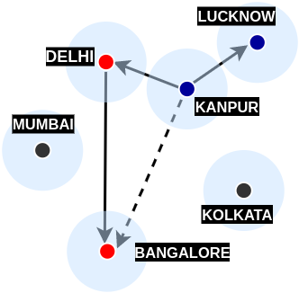
    <figcaption>Figure 6: Air network between four Indian cities - Kanpur, Lucknow, Delhi, and Bangalore.</figcaption>
</figure>
In the above figure, imagine that there are many operational flight paths in India, some of which are - Kanpur-Lucknow, Kanpur-Delhi, and Delhi-Bangalore. Reaching from Kanpur to Lucknow is straightforward, we take a direct flight. However, what if we want to reach from Kanpur to Bangalore? In this case, we first find out the <b>nearest city from Kanpur with a flight to Bangalore</b>. Let us assume that this city is Delhi. Therefore, instead of creating a shorter route to Bangalore (which comes with its operational expenses), we are traveling to Bangalore via Delhi. As we are selecting the <b>nearest city</b> (Delhi) with a flight to Bangalore, we are ensuring that the distance will be closest to the shortest path (which in theory is a direct flight to Bangalore) among all the operational paths.</p>
<p>To understand this even better, visualize this problem from the perspective of <a href="https://en.wikipedia.org/wiki/Triangle_inequality">triangle inequality</a>:
    <figure>
        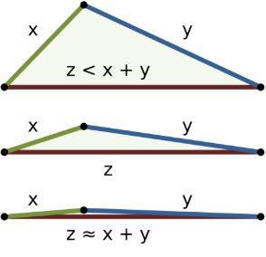
        <figcaption>
            Figure 7: Three examples of the triangle inequality for triangles with sides of lengths x, y, z. The top example shows a case where z is much less than the sum x + y of the other two sides, and the bottom example shows a case where the side z is only slightly less than x + y.
            <br>
            Image by <a href="https://commons.wikimedia.org/wiki/User:WhiteTimberwolf">WhiteTimberwolf</a> and licensed under <a href="https://creativecommons.org/licenses/by-sa/3.0/deed.en">Creative Commons Attribution-Share Alike 3.0 Unported</a>.
        </figcaption>
    </figure>
As evident from the above figure, if x gets smaller (which in our example is the distance between Kanpur and the nearest city which connects to Bangalore), the overall distance via this nearest city to the destination will get closer to the shortest path (Kanpur to Bangalore). If one closely observes this example, a neat idea presents itself:
    <blockquote cite="https://www.oreilly.com/library/view/handbook-of-data/9781351645645/">From each vertex, if we store distance information to a small number of vertices, can we still be able to report distance between
        any pair of vertices?</blockquote>

The above example showed that having distance information on nearby vertices which in turn have distance information of many other vertices is certainly a useful feature. The above blockquote is from Chapter 39 (Randomized Graph Data-Structures for Approximate Shortest Paths) in <a href="https://www.oreilly.com/library/view/handbook-of-data/9781351645645/">Handbook of Data Structures and Applications, 2nd Edition</a>.
</p>
<p><b>So what did Thorup and Zwick show in their paper on Approximate Distance Oracles?</b> And why is it important? From the same chapter:
    <blockquote cite="https://www.oreilly.com/library/view/handbook-of-data/9781351645645/">Among all the data-structures and algorithms designed for computing all-pairs approximate shortest paths, the approximate
        distance oracles are unique in the sense that they achieves simultaneous improvement in running time (sub-cubic) as well as
        space (sub-quadratic), and still answers any approximate distance query in constant time. 
        For any \(k \ge 1\), it takes \(O(kmn^{1/k})\) time to compute (2k − 1)-approximate distance oracle of size \(O(kn^{1+1/k})\) that would answer any (2k − 1)-approximate distance query in O(k) time.
    </blockquote>
</p>
<h2 id="approximate-distance-oracles">Approximate Distance Oracles</h2>
<p>To begin, why does the name contain the word <i>oracle?</i> The literal definition of oracle is "a place at which divine advice or prophecy was sought." From the original paper's abstract:
    <blockquote cite="https://dl.acm.org/doi/10.1145/1044731.1044732">The most impressive feature of our data structure is its constant query time, hence the name “oracle”.
    </blockquote>
Let us start by intuitively understanding the algorithms of a much simpler version known as the <b>3-approximate distance oracles</b>. Any approximate distance oracle requires two algorithms - a preprocessing/construction algorithm and a distance query algorithm. The preprocessing algorithm constructs the foundation upon which the distance queries can be answered within a constant time. This is similar to the formulation of the matrix in the Floyd-Warshall algorithm.
<h3 id="preprocessing-algorithm-for-3-approximate-distance-oracles">Preprocessing algorithm for 3-approximate distance oracles</h3>
Assume that the <b>set of vertices we have is labeled as V</b>. For example, in the Ten Blocks city, V = {B1, B2, B3, ..... , B10}. While researching on this topic, the most intuitive preprocessing algorithm I found was that described by <a href="https://www.oreilly.com/library/view/handbook-of-data/9781351645645/">Prof. Baswana and Prof. Sen (chapter 39)</a>:
<blockquote cite="https://www.oreilly.com/library/view/handbook-of-data/9781351645645/">
    <ol>
    <li>Let \(R \subset V\) be a subset of vertices formed by picking each vertex randomly independently with probability \( \gamma \) (the value of \( \gamma \) will be fixed later on).</li>
    <li>For each vertex \( u \in V \), store the distances to all the vertices of the sample set R.</li>
    <li>For each vertex \( u \in V \), let \( p(u) \) be the vertex nearest to \( u \) among all the sampled vertices, and let \( S_{u} \) be the set of all the
vertices of the graph G that lie closer to u than the vertex \( p(u) \). Store the vertices of set \( S_{u} \) along with their distance from \( u \).</li>
    </ol>
</blockquote>

Before intuitively understanding the algorithm, let's first see it in action. We start by choosing \( \gamma = n^{-1/2} = 1/\sqrt{n} \). We will later understand why this is the optimal value to choose. Step 1 can be implemented in the following manner:
<pre><code class="language-python">import random, math
# Based on the Ten Blocks graph
n = 10
V = range(1, n+1)
gamma = 1/math.sqrt(n)

# gamma comes about 0.316
R = [vertex for vertex in V if 
    random.choices([True, False], weights=[gamma, 1-gamma])[0]==True]
</code></pre>
Let us assume that after we ran the above code, we obtained <code>R as [1, 10]</code>.
</p>

<p>While the above algorithm is ambiguous about the distance metric in step 2, in reality, we want to store the <b>shortest distances</b> from all the vertices in V to those in sample set R. These distances can be calculated using Dijkstra's single-<u>source</u> shortest-path algorithm. However, do note the difference here! We only need to calculate Dijkstra's algorithm with the subset R as our source vertices (i.e. for our case, we need to perform the algorithm twice, one with source vertex as 1 and another with source vertex as 10). Here is the resulting matrix we are to obtain after step 2:
    <figure>
        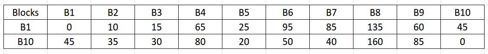
        <figcaption>Figure 8: Resulting matrix obtained after running Dijkstra's algorithm with source vertex as 1 and 10 (step 2). <b>NOTE:</b> This matrix is created for representational purposes, and as we will learn later, these values are <b>stored in a hash table</b>.</figcaption>
    </figure>
</p>
<p>Observing closely, step 3 has two sub-parts. For each \( u \in V \):
    <ol type="i">
        <li>Find \( p(u) \) which is the nearest vertex to \( u \) among all the sampled vertices.</li>
        <li>For each vertex u, find \( S_{u} \) which is the set of all the
            vertices of the graph G that lie closer to u than the vertex \( p(u) \).</li>
    </ol>
    The <b>sub-part i</b> can be solved simultaneously with step 2. Here is a modified version of the above matrix:
    <figure>
        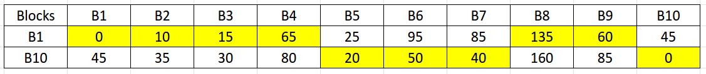
        <figcaption>Figure 9: The highlighted cells are the \( p(u) \) which are the nearest vertex (in sample set R) to their respective \( u \).</figcaption>
    </figure>
    To represent the above-highlighted cells, we create a new terminology called \( \delta(u, p(u)) \). For example, \( \delta(B3, p(B3)) = \delta(B3, B1) \) = 15 and \( \delta(B6, p(B6)) = \delta(B6, B10) \) = 50. Solving the <b>sub-part ii</b> requires some thinking. We cannot directly apply Dijkstra's algorithm to every vertex, as that would be the same as solving the classical APSP problem. However, there are two observations to be made here:
    <ul>
        <li>We only need to calculate the shortest distances between the pairs of each vertex in \( V \) and \( V\setminus R \). This is to avoid any redundant calculations as we have already found the distances between each vertex in V and set R in step 2.
            <ul type="circle">
                <li>The symbol \( \setminus \) stands for set-minus and is used in <a href="https://en.wikipedia.org/wiki/Complement_(set_theory)" >set-theory to find the relative complement</a> of any set A wrt a set B. For example, if A = {1,2,3,4} and B = {3, 5, 7}, then \( A\setminus B \) = {1, 2, 4}. In our case, \( V\setminus R \) = {2, 3, 4, 5, 6, 7, 8, 9}.</li>
            </ul>
        </li>
        <li>For any pair \( (u, w) \) where \( u \in V \) and \( w \in V\setminus R \), we can stop computing Dijkstra’s algorithm when that pair's distance (let this distance be \( \delta(u, w) \)) exceeds the value \( \delta(u, p(u)) \). That is, when \( \delta(u, w) \ge \delta(u, p(u)) \).</li>
    </ul>
    As the above observations were a bit mathematical, let us visualize them with our Ten Blocks graph.
    <figure>
        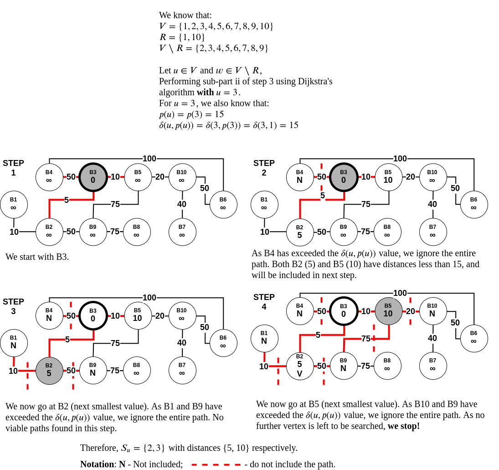
        <figcaption>Figure 10: In the above example, for \( u=3 \), we performed the modified Dijkstra’s algorithm. All paths which were \( > p(u) \) with \( p(u)=p(3)=15 \) were discarded. In the end, \( S_{u} = \{2, 5\} \) with distances \( \{5, 10\} \) respectively.</figcaption>
    </figure>
    As we can observe in the above figure, we never traversed 7 vertices as traversing them meant that the distance from B3 to that vertex would increase by 15. Let us now visualize the matrix formed after performing the final step 3.
    <figure>
        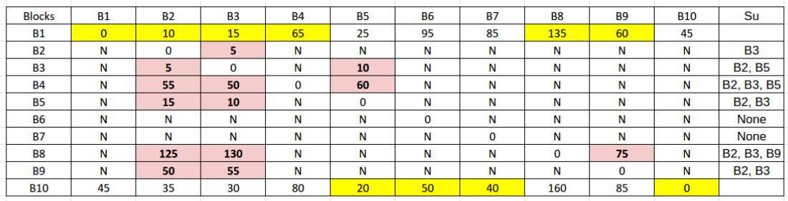
        <figcaption>Figure 11: Resulting matrix obtained after the preprocessing algorithm is completed. The yellow highlighted cells are \( p(u) \)s and the light-red highlighted cells are the \( S_{u} \)s.</figcaption>
    </figure>
    As can be observed from Figure 11, instead of calculating 90 shortest-paths (discarding the starting point calculations), as was the case with classical APSP algorithms like Floyd-Warshall, we are instead calculating 31 shortest-paths. Here is another way to visualize the above matrix (this visualization was first presented in the original paper by Thorup and Zwick):
    <figure>
        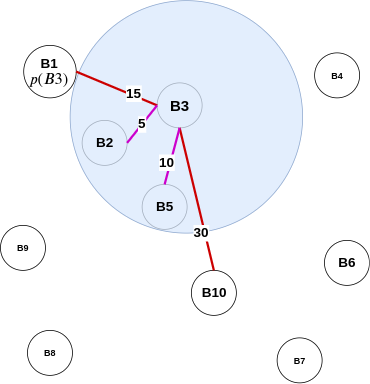
        <figcaption>Figure 12: Example of Approximate Distance Oracle in action with B3 as the center vertex. Pink edges are edges to vertices seen in \( S_{3} \). Red edges are edges to vertices in set R. From B3's point of view, this is all that this vertex can perceive.</figcaption>
    </figure>
</p>
<h3 id="distance-query-algorithm-for-3-approximate-distance-oracles">Distance query algorithm for 3-approximate distance oracles</h3>
<h4 id="analogy">An Analogy</h4>
<p>Before we understand the actual algorithm, let us discuss a thought process. Imagine you and your friend wants to meet for a get-together. If either of you knows the other's location, this task becomes simple - you meet at the known person's place. However, if you don't know each other's location and you don't want to bother asking for one, you can meet at a common/famous location, which can act as a middle ground. In the above preprocessing algorithm, \( S_{u} \) (or vertices that lie closer to u than the vertex \( p(u) \)) forms the known location, which is so close that there is no point in meeting at any other common location. However, the vertices in set R act as the common locations, which helps you meet your destination without explicitly looking for it. This means that these common locations do the task of managing all the other locations for vertices in set \( V\setminus R \).</p>
<h4 id="algorithm">Algorithm</h4>
<p>Based on the algorithm described by <a href="https://www.oreilly.com/library/view/handbook-of-data/9781351645645/">Prof. Baswana and Prof. Sen (chapter 39)</a>: 
    <blockquote cite="https://www.oreilly.com/library/view/handbook-of-data/9781351645645/">
        Let \( u, v \in V \) be any two vertices whose intermediate distance is to be determined approximately. 
        <ol>
            <li>If either \( u \) or \( v \) belong to set \( R \), we can report exact distance between the two.</li> 
            <li>Otherwise also exact distance \( \delta(u,v) \) will be reported if \( v \) lies in \( S_{u} \) or vice versa.</li> 
            <li>The only case, that is left, is when neither \( v\in S_{u} \) nor \( u\in S_{v} \). In this case, were report \( \delta(u, p(u)) + \delta(v, p(u)) \) as approximate distance between \( u \) and \( v \). This distance is bounded by \( 3\delta(u, v) \).</li>
        </ol>
    </blockquote>
    Let us discuss the above blockquote point-wise:
    <ol>
        <li>We have stored the exact distance from each vertex \( u \in V \) to all the vertices in set R (see preprocessing algorithm - step 2). We can use this to report the distance in O(1) time.</li>
        <li>If \( v \in S_{u} \) or \( u \in S_{v} \), then this means that either \( u \) or \( v \) or both lie in the other's locality. According to preprocessing algorithm - step 3, we have stored the vertices of set \( S_{u} \) along with their distance from \( u \). We can use this to report the distance in O(1) time.</li>
        <li>The last case is inspired by the triangle-inequality example in the <a href="#all-pairs-approximate-shortest-path">all-pairs approximate shortest-path</a> section. When neither \( v\in S_{u} \) nor \( u\in S_{v} \), and \( u \) or \( v \) do not belong to set \( R \), we can use \( p(u) \) to approximate the distance between \( u \) and \( v \). Like the air-travel analogy, wherein Delhi formed as the closest airport to Kanpur to reach Bangalore, in 3-approximate distance oracles, \( p(u) \) plays the role of Delhi. Furthermore, by finding the distance \( \delta(u, p(u)) + \delta(v, p(u)) \), we can use the triangle inequality to approximate the actual distance between \( u,v \) (i.e. \( \delta(u, v) \)).</li>
    </ol>
    Here is a figure describing all the three types of distance queries:
    <figure>
        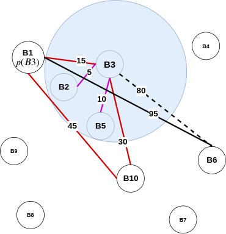
        <figcaption>Figure 13: Example of the distance query algorithm of approximate distance oracle in action. For better visualization, many edges are not displayed above.</figcaption>
    </figure>
    In this figure, finding the distance between B1 and B10 (which is 45) is straightforward as both are in set \( R \) (point 1). Moreover, finding distances for vertices in \( S_{3} \) (like B2 and B5) is an O(1) time operation as we have stored the distance between them. For finding the distance between (B3, B6), we first find the distance between (B1, B3) and add it with the distance between (B1, B6). As can be observed, the actual distance between (B1, B6) (indicated by the dotted line) is 80. However, our approximate distance is 110. As mentioned before, this distance is bounded by \( 3\delta(u, v) \). The derivation for the same is:
    <figure>
        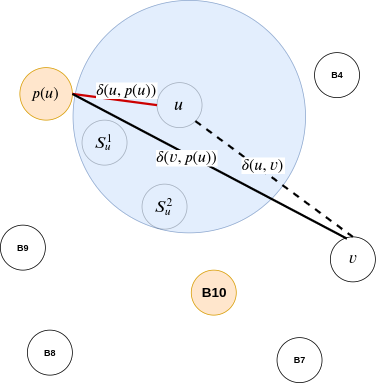
        <figcaption>Figure 14: A mathematical take on figure 13.</figcaption>
    </figure>
    <blockquote cite="https://www.oreilly.com/library/view/handbook-of-data/9781351645645/">
        <ol>
        <li>\( \delta(u, p(u)) + \delta(v, p(u)) \le \delta(u, p(u)) + (\delta(v, u) + \delta(u, p(u))) \)</li>
            <ul>
                <li>As by traingle inequality: \( \delta(v, p(u)) \le \delta(v, u) + \delta(u, p(u)) \)</li>
            </ul>
        <li>However, \( \delta(u, p(u)) + (\delta(v, u) + \delta(u, p(u))) = 2\delta(u, p(u)) + \delta(u, v) \)</li>
            <ul>
                <li>As graph is undirected: \( \delta(v, u) = \delta(u, v) \)</li>
            </ul>
        <li>Therefore, \( \delta(u, p(u)) + \delta(v, p(u)) \le 2\delta(u, p(u)) + \delta(u, v) \)</li>
        <li>Finally, \( \delta(u, p(u)) + \delta(v, p(u)) \le 2\delta(u, v) + \delta(u, v) \)</li>
            <ul>
                <li>This is because, \( \delta(u, p(u)) < \delta(u, v) \)</li>
            </ul>
        <li>Hence, \( \delta(u, p(u)) + \delta(v, p(u)) \le 3\delta(u, v) \)</li>
    </ol>
    </blockquote>
    Therefore, as proved above, for two vertices, the distance reported by 3-approximate distance oracles is no more than three times the shortest distance between these two vertices. Hence the name, <u>3-approximate</u> distance oracles. However, there are still a few questions left unanswered in this section, like:
    <ul>
        <li>Why did we choose \( \gamma = n^{-1/2} \) as our probability of a vertex getting picked in set \( R \)?</li>
        <li>How are the distances stored?</li>
    </ul>
    Let us first understand a generalization of the 3-approximate distance oracles, before diving into these questions.
</p>
<h2 id="2k-1-approximate-distance-oracles">(2k-1)-approximate distance oracles</h2>
<p>Why \( 2k-1 \)? From Thorup and Zwick:</p>
<blockquote> The approximate distances produced by our algorithms are of a finite stretch. An estimate \( \hat{\delta}(u, v) \) to the distance \( \delta(u, v) \)
    from \( u \) to \( v \) is said to be of stretch \( t \) if and only if \( \delta(u, v) \le \hat{\delta}(u, v) \le t . \delta(u, v) \). ..... The stretch
    of the approximations returned is at most \( 2k − 1 \).</blockquote>
This means that for generalized approximate distance oracles, \( \delta(u, v) \le \hat{\delta}(u, v) \le (2k-1) . \delta(u, v) \), i.e. \( t = 2k-1 \). Furthermore, when \( k = 1 \), we obtain \( \delta(u, v) \le \hat{\delta}(u, v) \le \delta(u, v) \), which is the classical APSP problem. Moreover, if we insert \( k = 2 \), we obtain the already studied <a href="#approximate-distance-oracles">3-approximate distance oracles</a>. Therefore, for any integer \( k\ge 1 \), \( 2k-1 \) times the actual shortest path is the upper bound for the approximate shortest path calculated using approximate distance oracles. The derivation of the above equation will be explained later in this section.
<p>The preprocessing and distance query algorithms for (\(2k-1\))-approximate distance oracles (as presented in Thorup and Zwick):
    <figure>
        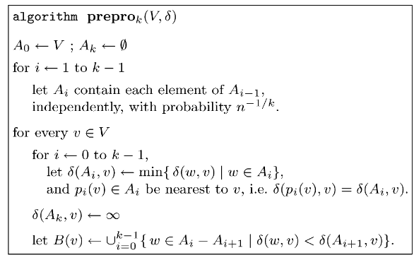
        <figcaption>Figure 15: Preprocessing Algorithm</figcaption>
    </figure>
    <figure>
        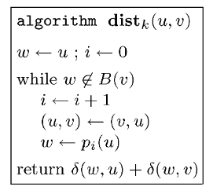
        <figcaption>Figure 16: Distance Query Algorithm</figcaption>
    </figure>
    While the above algorithms do seem a bit alien at first glance, they are incredibly intuitive and easy to understand (especially after visualizing the 3-approximate distance oracles). Let us dissect the steps and chalk out an example.
</p>
<h3 id="dissecting-the-preprocessing-algorithm">Dissecting the Preprocessing Algorithm</h3>
<p>For our 3-approximate distance oracles, we used a single set \( R \) which was a subset of the set of all vertices in a graph \( V \). For each \( u \in V \), this subset was calculated randomly independently with a probability of \( n^{-1/2} \). The (\(2k-1\))-approximate distance oracles have a similar start. We begin by initializing two subsets: 
    <ul>
        <li>\( A_0 \) contains all the vertices present in \( V \).</li>
        <li>\( A_k \) is \( \emptyset \) (an empty set).</li>
    </ul>
Then, for all \( i \) from \(1\) to \(k-1\), we randomly independently find out a subset \( A_i \) from the set \( A_{i-1} \), with a probability of \( n^{-1/k} \). To understand this better, let us modify the Python code we wrote for 3-approximate distance oracles:
<pre><code class="language-python">import random
def get_subsets(n, k, V):
    """
    n: number of vertices
    k: integer greater than 1 for stretch of (2k-1)
    V: vertices in the graph
    """
    if k < 1:
        raise ValueError("K must be greater than 1 as for " \
            "approximate distance oracles we are dealing with positive edge weights.")

    gamma = n**(-1/k)
    A = dict()
    A[0], A[k] = V, list()
    
    for i in range(1, k):
        A[i] = [vertex for vertex in A[i-1] if 
                    random.choices([True, False], weights=[gamma, 1-gamma])[0]==True]
    
    return A
</code></pre>
What if \( A_{k-1} \) is \( \emptyset \) (empty set)? From Thorup and Zwick:
<blockquote>In the following, for simplicity, we assume that \( A_{k-1} \ne \emptyset \). This is the case with
extremely high probability, and if not, we can just rerun the algorithm.
</blockquote>
</p>
<p>Let us assume that when the above code is executed on <i>The Ten Blocks</i> graph, with <code>k=3</code>, we get the following output: 
<pre><code class="language-python">>>> get_subsets(10, 3, range(1, 11))
{0: range(1, 11), 3: [], 1: [1, 5, 6, 10], 2: [1, 10]}
</code></pre>
Next, for every \( v\in V\) and \( i \) from \( 0 \) to \( k-1 \), we find out the vertex in set \( A_i \) which has the shortest distance to \( v \). We then store both the shortest vertex to \( v \) (as \( p_i(v) \)) and the distance between \( (p_i(v), v) \) (as \( \delta(A_i, v) \)). Here is a visualization of the same: 
<figure>
    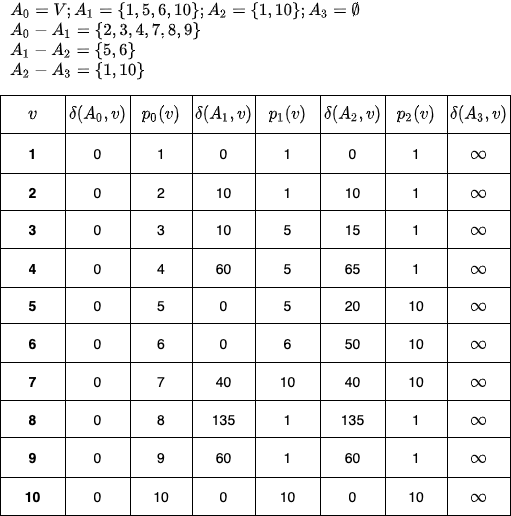
    <figcaption>Figure 17: Step 2 in preprocessing algorithm - finding out \( \delta(A_i, v) \) and \( p_i(v) \) for each \( v \in V\).</figcaption>
</figure>
Why is the above step important? What are we gaining from it?
<br>
As we will later see in the distance query section(cite this!), for a pair \((u, v)\), we are interested in finding a common vertex (i.e. a vertex which has shortest paths from \( u\) and \(v\)) such that this common vertex is as close to either \(u\) or \(v\) as possible. The above \(p_i(v)\) values help us find that common vertex. And we do, the \(\delta(A_i, v)\) value helps us find the approximate path distance.
<br><br>
Finally, for every \( v \in V \), we calculate \( B(v) \), which is a set of all vertices, wherein the distance \( \delta(w, v) \) (here \( w \) is formed by applying the relative complement of two sets - \( A_i \setminus A_{i+1} \), i.e. \( w \in A_i \setminus A_{i+1} \)) is less than the distance from all the vertices of \( A_{i+1} \) (i.e. \(\delta(A_{i+1}, v))\). Visualization for the same is:
<figure>
    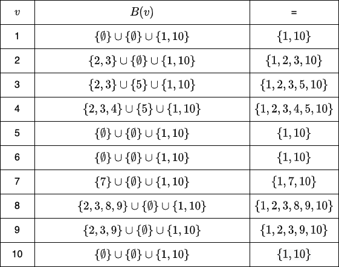
    <figcaption>Figure 18: Step 3 in preprocessing algorithm - finding out \( B(v)\) for each \( v\in V\).</figcaption>
</figure>
<figure>
    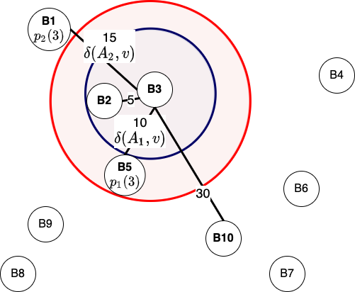
    <figcaption>Figure 19: Example of preprocessing step of (2k-1)-approximate distance oracles in action from B3's perspective. Out of all the 4 vertices of \(A_1\) (\( B1, B5, B6, B10 \)), B5 is the closest with a shortest path of 10. The purple circle contains all the vertices whose shortest-path to B3 is less than 10, i.e. B2 and B3. Furthermore, \(A_2\) contains B1 and B10, of which B1 is closest to B3 with a shortest path of 15. This is indicated by the red circle. All the vertices in \(A_2\) and the vertices inside the red circle form set \(B(3)\).</figcaption>
</figure>
An interesting thing to note about figure 18 is that all the vertices in \( {A_2 - A_3} = \{1, 10\} \) (i.e. in a general setting, we are referring to \(A_{k-1} - A_{k}\)) have shortest-path mappings to all other vertices in the graph. This is because, \( \delta(A_3, v) = \infty \), which makes both \( \delta(1, v) < \infty\) and \( \delta(10, v) < \infty\) (in the algorithm -  \( \delta(w, v) < \delta(A_{i+1}, v)\), wherein we want to include all the vertices for which this check holds valid). This provides an assurance during the execution of distance queries that in the worst case, every point will have a shortest path calculated with all the vertices in \(A_2\) (generalized to \( A_{k-1}\)), which can be used to calculate the approximate shortest paths.
</p>
<h3 id="dissecting-the-distance-query-algorithm">Dissecting the Distance Query Algorithm</h3>
<p>We start the algorithm by initializing \(w = u, i = 0\) and then ask a simple question, is the vertex \(w\) in set \(B(v)\)? We are interested in understanding whether, with the present \(w\), the paths \(\delta(w, u)\) and \(\delta(w, v)\) have been calculated and stored in the pre-processing step. This is similar to finding the common location in 3-approximate distance oracles. However, the difference is that for generalized distance-oracles, we have multiple \(p_i(u)\) instead of one. Notice that in each iteration of the while-loop, we increment \( i\) and calculate \(w = p_i(u)\).
<br><br>
What would happen if we don't execute the line \((u, v) \leftarrow (v, u)\)? Here is a visualization for the same:
<figure>
    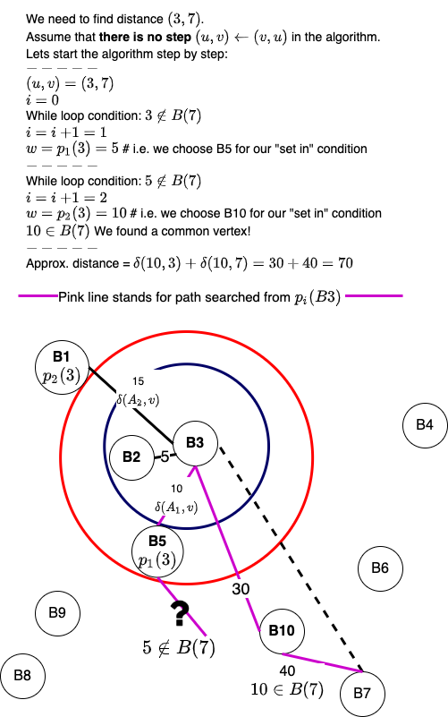
    <figcaption>Figure 20: Analyzing a what if? - we don't execute the line \((u, v) \leftarrow (v, u)\) with \( (u,v) = (3, 7)\).</figcaption>
</figure>
From Figure 20, we can observe that when repeatedly swapping of \(u\) and \(v\) is not performed, the initial \(u\)'s \(p_i(u)\)'s is taken for the reference point \(w\) in every while-loop iteration. By keeping \(v\) out of the equation, it may occur that eventually, when \(p_i(u) \in B(v)\), the p_i(u) would be surprisingly far from \(v\). This is especially true for large \(i\) values such as \(i=k-1\). It turns out, by swapping \(u\) and \(v\) values, we can reduce this effect to a great extent. Map routing algorithms use a similar technique to find the most optimal path. Here is a visualization of the working of normal distance query algorithm, which has the line \((u, v) \leftarrow (v, u)\):
<figure>
    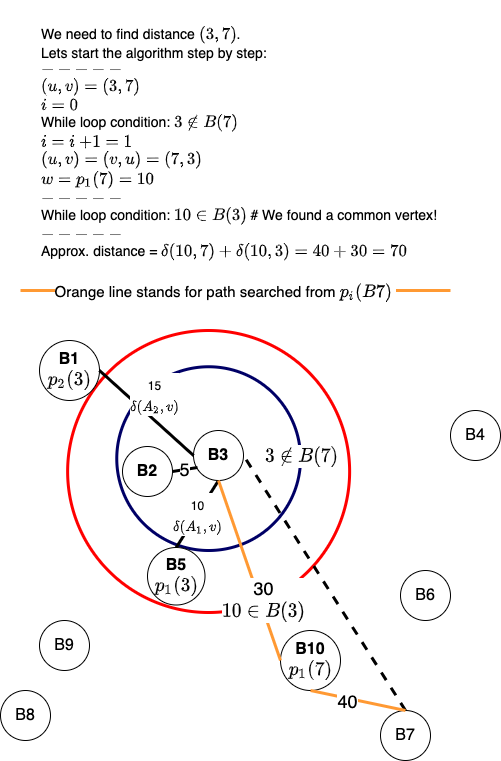
    <figcaption>Figure 21: Visualization of the distance query algorithm in action for finding distance between vertices \(3\) and \(7\).</figcaption>
</figure>
</p>
<h3 id="miscellaneous-questions">Miscellaneous Questions</h3>
<h4>How are the distances stored?</h4>
<p>From the paper by Thorup and Zwick:
<blockquote>
The data structure constructed by the preprocessing algorithm stores for each vertex \(v \in V\),
<ul>
    <li> for \(0 \le i \le k−1\), the witness \(p_i(v)\) and the corresponding distance \(\delta(p_i(v), v) =
    \delta(A_i, v)\).</li>
    <li>the (2-level) hash table for the bunch \(B(v)\), holding \(\delta(v,w)\), for every \(w \in B(v)\).</li>
</ul>
</blockquote>
For the 2-level hash table, Thorup and Zwick have cited <a href="https://dl.acm.org/doi/10.1145/828.1884">Fredman, Komlós & Szemerédi (1984)</a> who helped develop the <a href="">perfect hashing</a> scheme for static sets. As mentioned in Introduction to Algorithms (Cormen, et. al.), perfect hashing provides excellent <u>worst-case</u> performance (\(O(1)\) memory access to perform a search, and can limit the space used to \(O(n)\)) when the set of keys is static, which is presently the case for approximate distance oracles. Do note that we have not dealt with dynamic graphs in this blog post. For dynamic graphs, it will be interesting to observe the performance of <a href="https://en.wikipedia.org/wiki/Cuckoo_hashing">cuckoo hashing</a>. Coming back to the structure of 2-level hashing, from <a href="https://en.wikipedia.org/wiki/Introduction_to_Algorithms">Introduction to Algorithms (Cormen, et. al.)</a>:
    <blockquote cite="https://mitpress.mit.edu/books/introduction-algorithms">
        The first level is essentially the same as for hashing with chaining: we hash the \(n\) keys into \(m\) slots using a hash function \(h\) carefully selected from a family of universal hash functions.<br>
        Instead of making a linked list of the keys hashing to slot \(j\), however, we use a small secondary hash table \(S_j\) with an associated hash function \(h_j\). By choosing the hash functions \(h_j\) carefully, we can guarantee that there are no collisions at the secondary level.
    </blockquote>
How do we use the above tables to answer the distance queries? Again, from Thorup and Zwick:
    <blockquote>
        The distance \( \delta(w, u) = \delta(p_i(u), u) \) is read directly from the data structure constructed during the preprocessing stage. The distance \( \delta(w, v) = \delta(v,w) \) is returned by the (2-level) hash table of \( B(v) \) together with the answer to the query \( w \in B(v) \).
    </blockquote>
</p>
<h4>Can this be used for distance matrix compression?</h4>
<p>From Thorup and Zwick:
<blockquote>
An interesting application of the above technique is the following: Given a huge \( n × n\) distance matrix that resides in external memory, or on tape, we can efficiently produce a compressed approximate version of it that could fit in a much smaller, but much faster, internal memory. We assume here that it is possible to pick a not too large integer \( k\) such that the internal memory can accommodate a data structure of size \( O(kn^{1+1/k}) \).
A random access to an entry in the original external memory matrix is typically in the order of 10,000 times slower than an internal memory access. Thus, our simple \(O(k)\) time distance query algorithm, working in internal memory, is expected to be significantly faster than a single access to the external memory.
</blockquote>
</p>
<h4>Why choose \(n^{-1/k}\) as our probability?</h4>
<p>It turns out that the runtime of \((2k-1)\)-approximate distance oracles is \(O(\gamma^{k-1}n + \frac{k-1}{\gamma}m)\). Here \( \gamma \) is the probability of choosing a vertex in a set. When we calculate the derivative of the above equation wrt \(\gamma\), we get: 
<style>.li-equation {
    margin: 10px 0;
}</style>
<ul>
    <li class="li-equation">\( \cssId{diff-var-order-mathjax}{\tfrac{\mathrm{d}}{\mathrm{d}\gamma}}\left[{\left(\gamma^{k-1}n+\dfrac{k-1}{\gamma}\right)m}\right] = 0\)     - [1]</li>

    <li class="li-equation">\( m\left(\left(k-1\right)n\gamma^{k-2}-\dfrac{k-1}{\gamma^2}\right) = 0\)</li>
    
    <li class="li-equation">\( \dfrac{\left(k-1\right)m\left(n\gamma^k-1\right)}{\gamma^2} = 0\)</li>
    
    <li class="li-equation">\( \gamma^k = \dfrac{1}{n} = n^{-1} \)</li>
    
    <li class="li-equation">\( \gamma = n^{-1/k} \)</li>
</ul>
Furthermore, when we insert \(n^{-1/k}\) in [1], we get the time complexity as:
<ul>
    <li class="li-equation">\( \left[{\left((n^{-1/k})^{k-1}n+\dfrac{k-1}{(n^{-1/k})}\right)m}\right] = 0\)</li>
    
    <li class="li-equation">\( \left[{\left((n^{-1/k})^{-1}(n^{-1/k})^{k}n+\dfrac{k-1}{(n^{-1/k})}\right)m}\right] = 0\)</li>
    
    <li class="li-equation">\( \left[{\left(n^{1/k}+(k-1)n^{1/k}\right)m}\right] = 0\)</li>
    
    <li class="li-equation">\( (n^{1/k}(1 + k - 1))m = O(kmn^{1/k}) \)</li>
</ul>
For the size complexity of the generalized approximate distance oracles, from Thorup and Zwick:
<blockquote>
The total size of the data structure is \( O(kn + \sum_{v\in V} |B(v)|) \). In Section 3.3, we show that the expected size of \( B(v) \), for every \( v \in V\), is at most \( kn^{1/k} \). The total expected size of the data structure is, therefore, \( O(kn^{1+1/k}) \).
</blockquote>
Unfortunately, I am still trying to figure out all the math (especially the initial equation's origin). A great reference for these derivations can be found in <a href="https://github.com/TylerYep/approx-distance-oracle">Tyler, Mark, Ivy, and Josh's CS 166 project</a>.
<!-- <figure>
    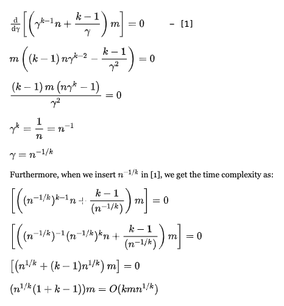
    <figcaption>Figure 22: Derivation of \( \gamma\) and time complexity.</figcaption>
</figure> -->
</p>
<h2 id="conclusion">Conclusion</h2>
<p>In a future blog post, we will discuss how we can find approximate distances for dynamic graphs, the improvements <a href="https://ieeexplore.ieee.org/document/5671362/">Patrascu and Roditty</a> made to approximate distance oracles, and how we can obtain improved tree covers and distance labelings using the above data structure.
<br>
Keep Exploring!
</p>
<br>
<a id="back-link" href="../blog.html">&#x2190;</a>
</div>
<footer>
<hr>
<div>
© 2021 Parth Parikh.
</div>
</footer>

</body>
</html>